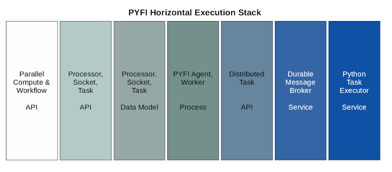
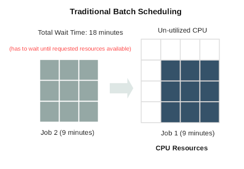
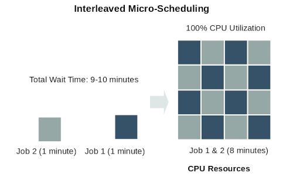
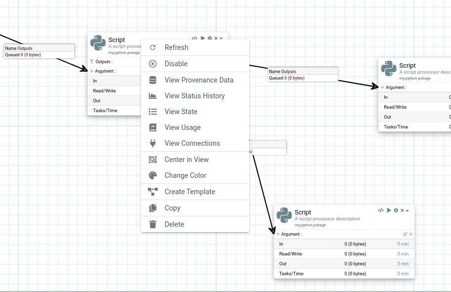
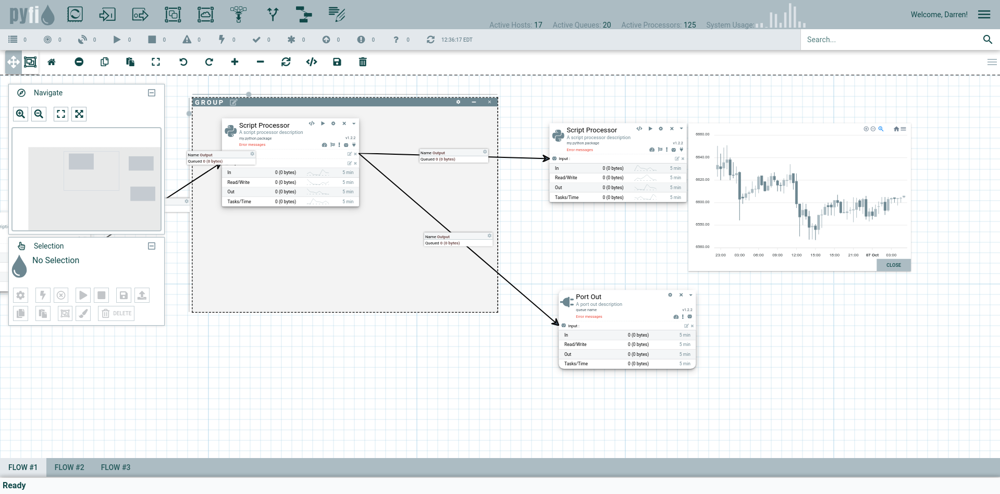
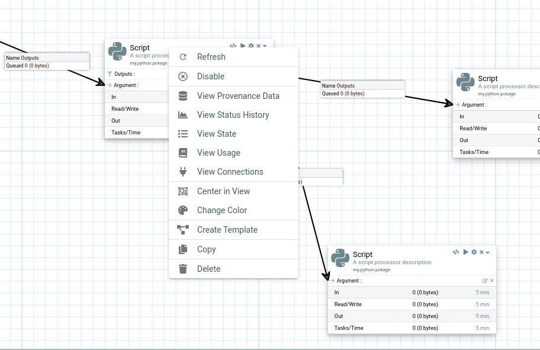
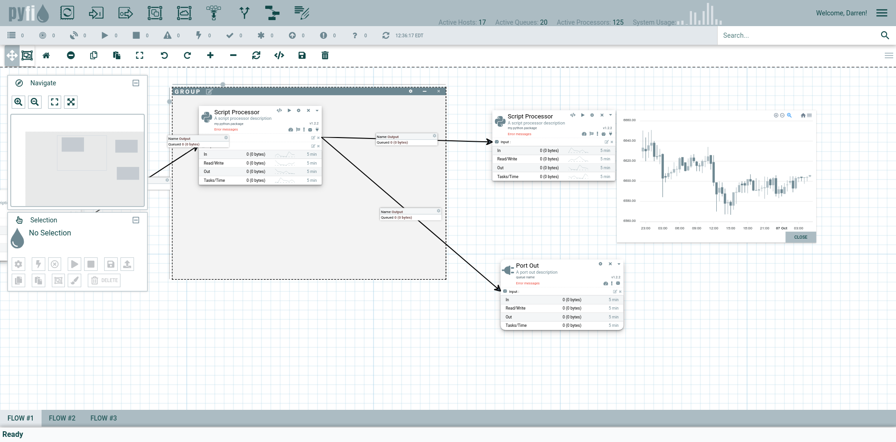

Overview¶
PYFI is a distributed data flow and computation system that runs on transactional messaging infrastructure. It implements the concept of a NVM Networked-Virtual-Machine by distributing logic over networked hardware CPU/GPU processors.
It offers applications and users the following benefits:
Persistent Task & Workflow Execution - Tasks & Workflows persist within the network
Reliable Task Execution - Tasks execution survives failure anomalies, restarts, hardware faults
Simplified Workflow Functions - Parallel, Pipeline, Funnel
Powerful Compute Composition - Build at-scale data and compute flows using CLI, UI or API
Streaming Compute - Real-time streaming compute data flows
Secure & Trusted Code Execution - No client-side code marshalling or serialization. Code is loaded from the network side via git repositories into isolated virtual environments
Micro-Scheduling - Efficient task scheduling and 100% hardware utilization
Next-Gen User Interface - Quickly build out at-scale HPC data flows with simple and intuitive interfaces.
As a platform, PYFI is designed so you can build rich, high-performance applications, services and scripts on top. Doing this provides the transparent benefits listed above and makes building powerful compute applications fast and easy.
PYFI Platform Architecture¶
Managed Compute environment¶
The entire PYFI stack, as a whole, provides a complete “Managed Compute Platform” (MCP) with specialized tooling to support different layers of concern, such as:
Hardware Compute Resources
Compute Availability & Scheduling
Distributed Flows
Python Processors + Modules & Functions
Data Logging and Streaming + Real-time & Historical Metrics
PYFI is designed as a single, extensible platform for building reliable & persistent computational workflows. It relieves developers from having to know where and when tasks get executed or having to configure client side services. In addition, PYFI’s multiple API’s are designed for users (of all kinds) to build complex, fully-distributed HPC apps and sharable workflows. The platform nature of PYFI sets it apart from other libraries and frameworks that only tackle part of the big picture.
Simple, Parallel Workflows¶
PYFI exposes simple APIs that make writing powerful, distributed workflows fast and easy. A few examples below.
from pyfi.client.api import parallel, pipeline, funnel
from pyfi.client.example.api import do_something_p as do_something
# Create a pipeline that executes tasks sequentially, passing result to next task
_pipeline = pipeline([
do_something("One"),
do_something("Two"),
# Create a parallel structure that executes tasks in parallel and returns the
# result list
parallel([
do_something("Four"),
do_something("Five"),
]),
do_something("Three")])
# Create another parallel structure using the above pipeline as one of its tasks
_parallel = parallel([
_pipeline,
do_something("Six"),
do_something("Seven")])
# Create a funnel structure that executes all its tasks passing the result to the
# single, final task
_funnel = funnel([
do_something("Eight"),
_parallel,
do_something("Nine")])
# Gather the result from the _funnel and send it to do_something("Four")
print("FUNNEL: ", _funnel(do_something("Four")).get())
# Build out the infrastructure
pyfi add queue -n pyfi.queue1 -t direct
pyfi add processor -n proc1 -g https://github.com/radiantone/pyfi-processors -m pyfi.processors.sample
# Add sockets (not POSIX sockets!) that receive incoming task requests with -c concurrency factors (i.e. # of CPUs occupied)
pyfi add socket -n pyfi.processors.sample.do_something -q pyfi.queue1 -pn proc1 -t do_something -c 5
pyfi add socket -n pyfi.processors.sample.do_this -q pyfi.queue1 -pn proc1 -t do_this -c 8
# Execute a task (can re-run only this after network is built)
pyfi task run --socket pyfi.processors.sample.do_something --data "['some data']"
# Create alias' for the run task commands
alias pyfi.processors.sample.do_something="pyfi task run -s pyfi.processors.sample.do_something"
alias pyfi.processors.sample.do_this="pyfi task run -s pyfi.processors.sample.do_this"
# Pipe some output from stdin to a task
echo "HI THERE!" | pyfi.processors.sample.do_something
# Pipe some text to a task, then append some new text to that output, then send that to final task, do_this
echo "HI THERE!" | pyfi.processors.sample.do_something | echo "$(cat -) add some text" | pyfi.processors.sample.do_this
# Echo a string as input to two different processors and they run in parallel
echo "HI THERE!" | tee -a >(pyfi.processors.sample.do_something) tee -a >(pyfi.processors.sample.do_this)
$ pyfi ls call --id 033cf3d3-a0fa-492d-af0a-f51cf5f58d49 -g
pyfi.processors.sample.do_something
└─────────────────────────────────────────────┐
pyfi.processors.sample.do_something
┌──────────────────────┴───────────────────┬───────────────────────────────────────┐
pyfi.processors.sample.do_something pyfi.processors.sample.do_something pyfi.processors.sample.do_something
Persistent, Reliable Tasks¶
Task calls in your workflows are completely persisent, meaning they are stored in the PYFI network (database) and delivered to the task at the soonest possible time. This depends when the processor hosting the task is available and free to do the compute, but the task call will remain active until it has completed. If the task worker fails for any reason, the task can be retried on another node. These qualities of service are completely invisible to the application or user script.
High Level Architecture¶
PYFI’s high level architecture can be seen in the diagram below. Central to the architecture is the PYFI Model Database which stores the relational meta-model for the PYFI compute network. This database provides the single source of truth for the runtime operation of the distributed architecture. Equally as important is the reliable message broker which is the heart of PYFI’s execution model. Workflows execute functions just like any other python code, but those functions trigger persistent requests for PYFI to execute a remote task when the compute resources are available. The message broker handles all the runtime orchestration with compute nodes to carry out tasks.

PYFI System Architecture¶
Virtual Processors¶
PYFI introduces the notion of virtual processors that network together to form a reliable and distributed mesh topology for executing compute tasks.
PYFI Processors are object abstractions that capture the location, version and definition of python modules and functions via your own git repository. This trusted code model is important as it establishes the contract between your code, PYFI and virtual processors where the code is to be executed. This relationship must be strong and well-defined.
Via the various PYFI interfaces (CLI, API, Python etc) you define PYFI virtual processors. Agents (a kind of PYFI service) running across your network will deploy them and receive tasks to execute their code.
This type of service (or task) mesh architecture allows for fine-grained scalability characteristics that benefit the peformance and stability of the network.
At Scale Design¶
PYFI is designed to operate “at scale”, which means there is a one-to-one correspondence between logic compute units (processors) and physical compute units (CPU cores). This provides a number of obvious and inherent benefits such as hardware redundancy, high-availability, fault-tolerance, fail-over, performance and ease of maintenance.
PYFI At-Scale Task/CPU Architecture¶
Event Driven¶
PYFI is an event driven architecture from the bottom (data) to the top (ui). This design approach allows it to scale smoothly and not overconsume resources. Messages and notifications are sent when they are available which eliminates the need for long polling or similar resource intensive designs. Because PYFI is purely event driven, when there are no events, PYFI is respectful of system resources and can idle - allowing kernel schedulers and other system tasks to operate as needed.
Message-Oriented Execution Graphs¶
PYFI differs from other dataflow engines in that it is fully distributed and runs “at-scale” across heterogeneous infrastructure and computational resources.
It establishes a logical directed-graph (DG) overlay network across compute nodes and executes your custom processor scripts (python, node, bash).
Using the power of reliable, transactional messaging, compute tasks are never lost, discarded or undone. Fault tolerance and load-balancing are intrinsic qualities of PYFI and not tacked on as a separate process, which itself would be a failure point.
Execution Stack¶
There are various layers within PYFI that allow it to scale seamless and expose simple APIs that do powerful things behind the scenes. A quick glance at the lifecycle of a PYFI python task is below. Various qualities of service are offered by each layer, most of which are implied during a task invocation.
Micro-Scheduling¶
PYFI uses a scheduling design that will allow tasks to fully utilize the available CPUs in the PYFI network, if processors are created in the PYFI database. PYFI will never consume more resources than what is requested in its database. Although traditional batch scheduling design allows for blocks of compute resources to be dedicated to one task or flow, it comes at the expense of resource utilization and wait time for other requests. Micro-scheduling seeks to remedy this situation and provide better compute efficiency which means higher task throughput and more satisfied users.
 A True Elastic Compute Platform¶
PYFI provides a set of interacting compute layers that control the location and execution of managed code assets. With PYFI, code modules and functions can be loaded at multiple locations and invoked from clients without knowledge of where those functions are or how those functions are executed.
Redundant code (processors) loaded into a PYFI network will be able to respond to higher volume of data and requests and thus can scale at will, individually.
Functional tasks (processors hosting code) are fronted by durable queues that deliver reliable invocations when those functions are present on the network, regardless of their exact location. This allows the system to be resilient to hardware or network changes, as well as influence by schedulers that might change the location of functions (processors) to re-balance the resources across the network.
All of this underlying management, hardware arriving and departing, services starting and stopping, processors moving from one host to another (or failing), is completely invisibile to the applications and clients using the system. To them, function calls will always, eventually be executed, if not immediately, in the near future when compute resources allow it.
System Benefits¶
The PYFI platform provides numerous benefits, only some of which are below.
A single, purpose-built platform that addresses end-to-end managed compute from the CPU to the end user. Compared to cobbled together frameworks.
Data flow and data streaming support
Real-time observable data across your compute resources
DevOps out-of-the-box - PYFI integrates directly with GIT allowing your existing code management practices to be used.
Elastic, At-Scale - PYFI is an elastic infrastructure, meaning that it scales up and down on-the-fly. Code can be moved across hardware locations at any time without data loss.
Extensible - PYFI is designed to be extended and specialized to your needs. Both the UI and the core platform is open and leverages modern framework design patterns to easily build on top of.
Ecosystem of Supported Roles¶
The PYFI compute environment is a seamless collaboration across disciplines with powerful, out-of-the-box tooling for everyone to manage their concerns, independent of the whole. Let’s quantify the previous sentence some. Let’s say you are in the middle of running a lengthy workflow, but elsewhere in the grid, hardware administrators need to replace hardware some of your tasks might be running on. With PYFI, your workflow would simply pause if it cannot find an active PYFI processor hosting the task (python function) it needs and when the hardware admins bring new hardware online, the PYFI agents resume and your workflow would continue running where it left off, seamlessly. Sounds amazing but it’s true!
Some of the roles that might participate in a PYFI network, directly or indirectly.
Hardware Admins
Infrastructure Admins
Compute Admins
Data Admins
Code Repository Owners
End Users
Powerful, Next-Gen UI¶
PYFI’s user interface is a powerful, next-gen no-code application that enpowers anyone to create fast, parallel workflows across PYFI’s distributed task mesh.
 


